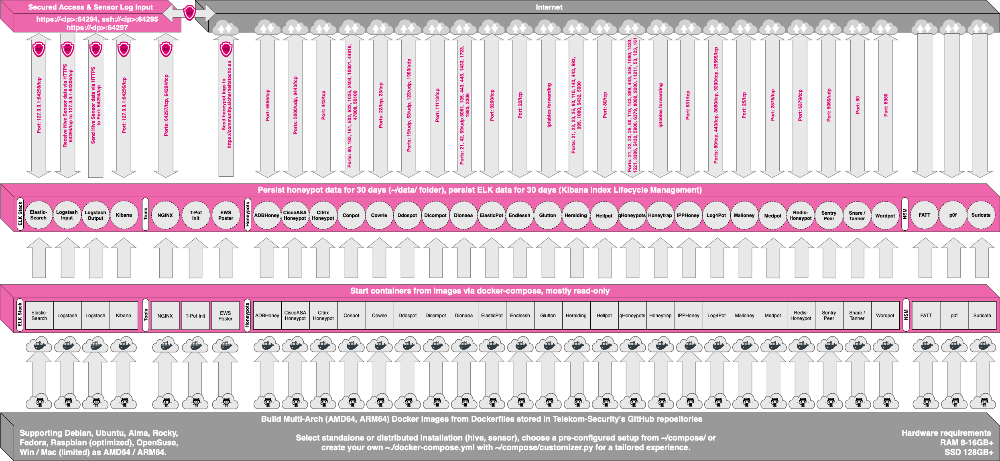
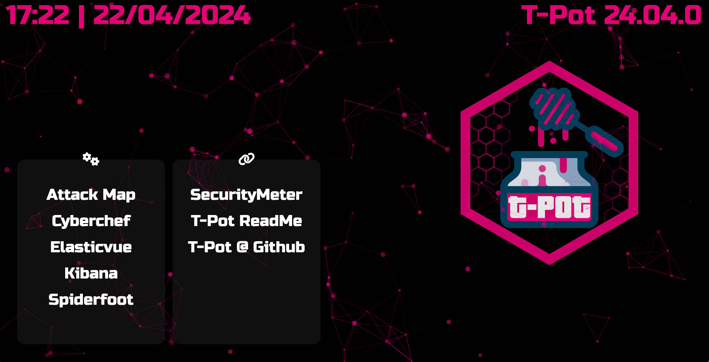
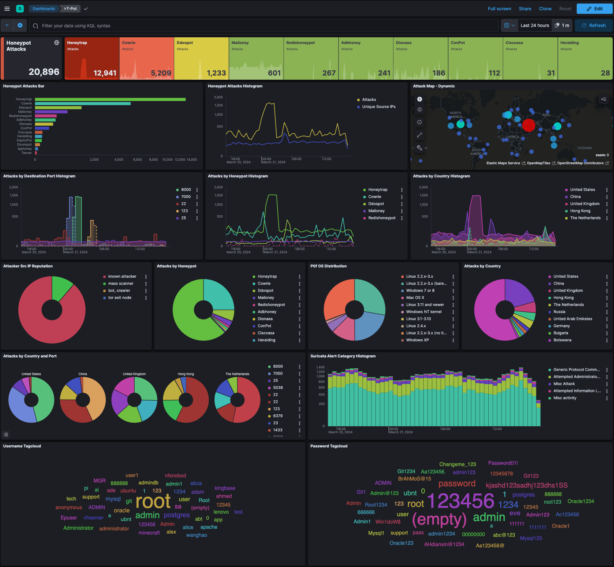
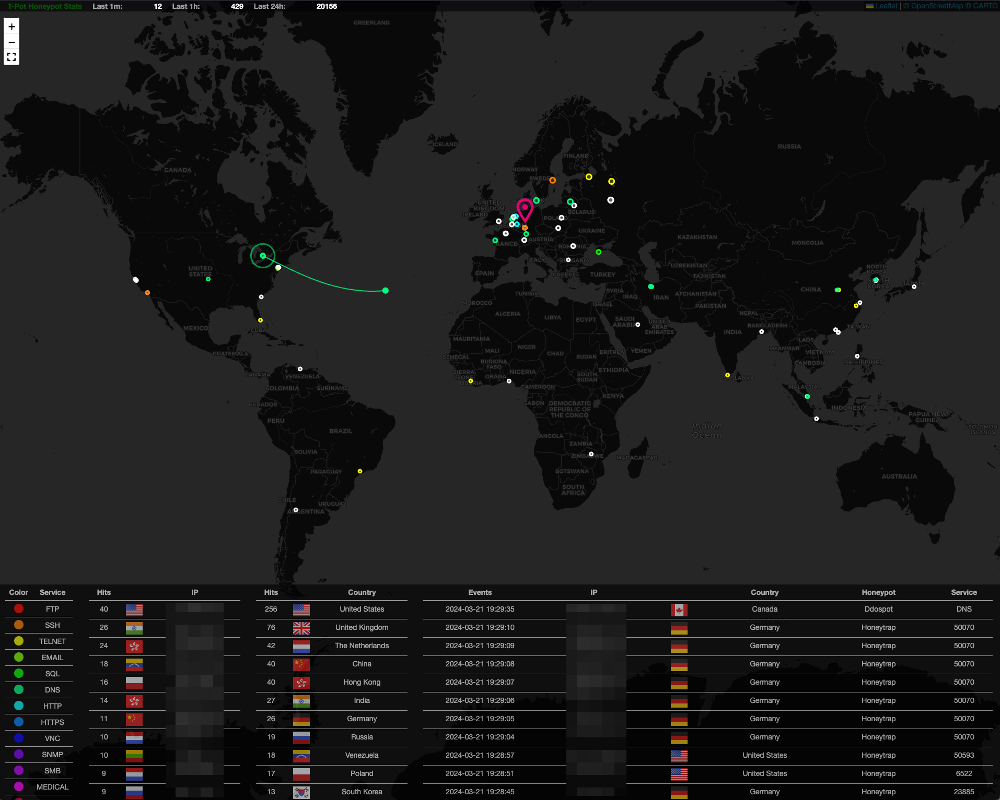
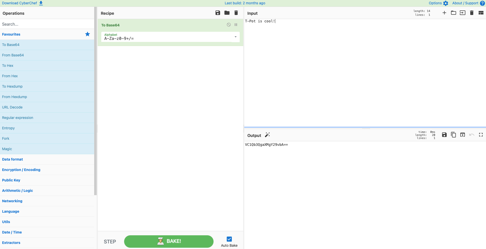
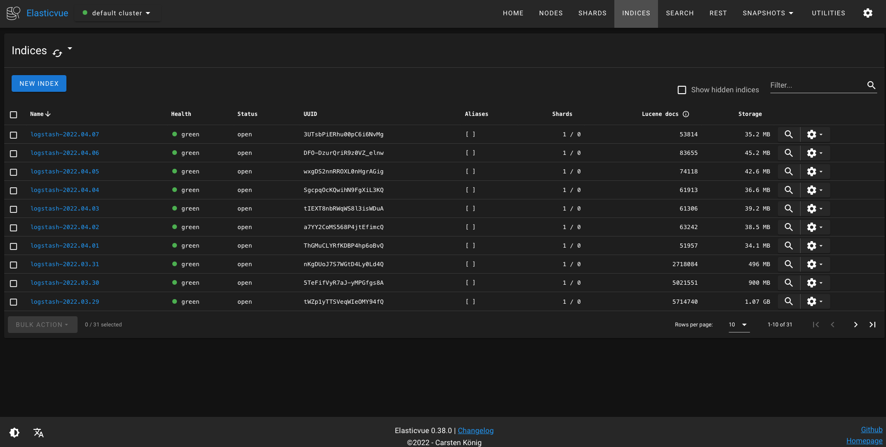
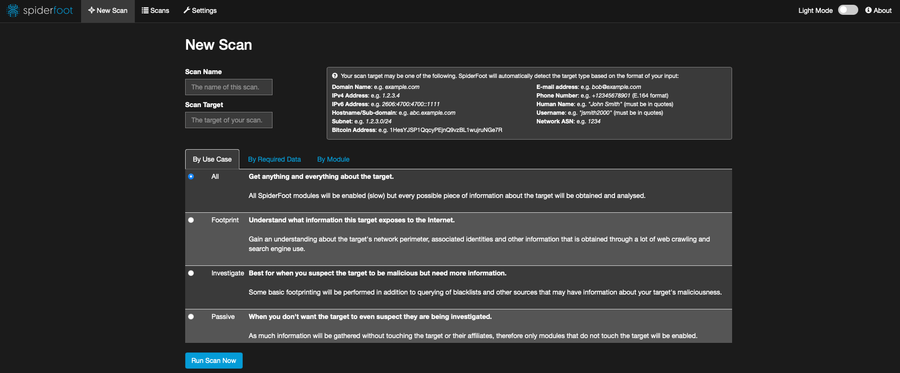
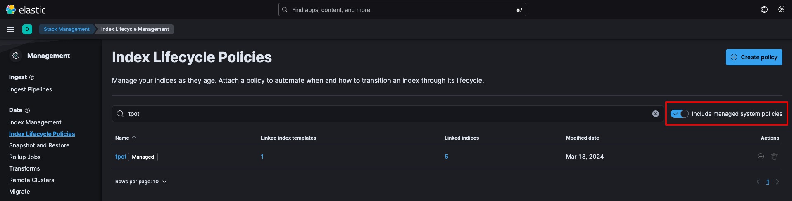
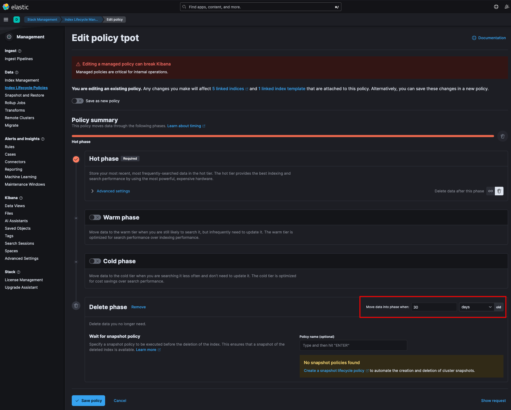

CyberPot - The All In One Multi Honeypot Platform
CyberPot is the all in one, optionally distributed, multiarch (amd64, arm64) honeypot plattform, supporting 20+ honeypots and countless visualization options using the Elastic Stack, animated live attack maps and lots of security tools to further improve the deception experience.
TL;DR
- Meet the system requirements. The CyberPot installation needs at least 8-16 GB RAM, 128 GB free disk space as well as a working (outgoing non-filtered) internet connection.
- Download or use a running, supported distribution.
- Install the ISO with as minimal packages / services as possible (
sshrequired) - Install
curl:$ sudo [apt, dnf, zypper] install curlif not installed already - Run installer as non-root from
$HOME:
- Follow instructions, read messages, check for possible port conflicts and reboot
- CyberPot - The All In One Multi Honeypot Platform
- TL;DR
- Disclaimer
- Technical Concept
- System Requirements
- System Placement
- Installation
- First Start
- Remote Access and Tools
- Configuration
- Maintenance
- Troubleshooting
- Contact
- Licenses
- Credits
-
Disclaimer
- You install and run CyberPot within your responsibility. Choose your deployment wisely as a system compromise can never be ruled out.
- For fast help research the Issues and Discussions.
- The software is designed and offered with best effort in mind. As a community and open source project it uses lots of other open source software and may contain bugs and issues. Report responsibly.
- Honeypots - by design - should not host any sensitive data. Make sure you don't add any.
- By default, your data is submitted to Sicherheitstacho. You can disable this in the config (
~/cyberpot/docker-compose.yml) by removing theewspostersection. But in this case sharing really is caring!
Technical Concept
CyberPot's main components have been moved into the cyberpotinit Docker image allowing CyberPot to now support multiple Linux distributions, even macOS and Windows (although both limited to the feature set of Docker Desktop). CyberPot uses docker and docker compose to reach its goal of running as many honeypots and tools as possible simultaneously and thus utilizing the host's hardware to its maximum.
CyberPot offers docker images for the following honeypots ...
- adbhoney,
- ciscoasa,
- citrixhoneypot,
- conpot,
- cowrie,
- ddospot,
- dicompot,
- dionaea,
- elasticpot,
- endlessh,
- glutton,
- hellpot,
- heralding,
- honeypots,
- honeytrap,
- ipphoney,
- log4pot,
- mailoney,
- medpot,
- redishoneypot,
- sentrypeer,
- snare,
- tanner,
- wordpot
... alongside the following tools ...
- Autoheal a tool to automatically restart containers with failed healthchecks.
- Cyberchef a web app for encryption, encoding, compression and data analysis.
- Elastic Stack to beautifully visualize all the events captured by CyberPot.
- Elasticvue a web front end for browsing and interacting with an Elasticsearch cluster.
- Fatt a pyshark based script for extracting network metadata and fingerprints from pcap files and live network traffic.
- CyberPot-Attack-Map a beautifully animated attack map for CyberPot.
- P0f is a tool for purely passive traffic fingerprinting.
- Spiderfoot an open source intelligence automation tool.
- Suricata a Network Security Monitoring engine.
... to give you the best out-of-the-box experience possible and an easy-to-use multi-honeypot system.
Technical Architecture

The source code and configuration files are fully stored in the CyberPot GitHub repository. The docker images are built and preconfigured for the CyberPot environment.
The individual Dockerfiles and configurations are located in the docker folder.
Services
CyberPot offers a number of services which are basically divided into five groups:
- System services provided by the OS
- SSH for secure remote access.
- Elastic Stack
- Elasticsearch for storing events.
- Logstash for ingesting, receiving and sending events to Elasticsearch.
- Kibana for displaying events on beautifully rendered dashboards.
- Tools
- NGINX provides secure remote access (reverse proxy) to Kibana, CyberChef, Elasticvue, GeoIP AttackMap, Spiderfoot and allows for CyberPot sensors to securely transmit event data to the CyberPot hive.
- CyberChef a web app for encryption, encoding, compression and data analysis.
- Elasticvue a web front end for browsing and interacting with an Elasticsearch cluster.
- CyberPot Attack Map a beautifully animated attack map for CyberPot.
- Spiderfoot an open source intelligence automation tool.
- Honeypots
- A selection of the 23 available honeypots based on the selected
docker-compose.yml.
- A selection of the 23 available honeypots based on the selected
- Network Security Monitoring (NSM)
_ Fatt a pyshark based script for extracting network metadata and fingerprints from pcap files and live network traffic.
_ P0f is a tool for purely passive traffic fingerprinting. * Suricata a Network Security Monitoring engine.
User Types
During the installation and during the usage of CyberPot there are two different types of accounts you will be working with. Make sure you know the differences of the different account types, since it is by far the most common reason for authentication errors.
| Service | Account Type | Username / Group | Description |
|---|---|---|---|
| SSH | OS | <OS_USERNAME> |
The user you chose during the installation of the OS. |
| Nginx | BasicAuth | <WEB_USER> |
<web_user> you chose during the installation of CyberPot. |
| CyberChef | BasicAuth | <WEB_USER> |
<web_user> you chose during the installation of CyberPot. |
| Elasticvue | BasicAuth | <WEB_USER> |
<web_user> you chose during the installation of CyberPot. |
| Geoip Attack Map | BasicAuth | <WEB_USER> |
<web_user> you chose during the installation of CyberPot. |
| Spiderfoot | BasicAuth | <WEB_USER> |
<web_user> you chose during the installation of CyberPot. |
| CyberPot | OS | cyberpot |
cyberpot this user / group is always reserved by the CyberPot services. |
| CyberPot Logs | BasicAuth | <LS_WEB_USER> |
LS_WEB_USER are automatically managed. |
System Requirements
Depending on the supported Linux distro images, hive / sensor, installing on real hardware, in a virtual machine or other environments there are different kind of requirements to be met regarding OS, RAM, storage and network for a successful installation of CyberPot (you can always adjust ~/cyberpot/docker-compose.yml and ~/cyberpot/.envto your needs to overcome these requirements).
| CyberPot Type | RAM | Storage | Description |
|---|---|---|---|
| Hive | 16GB | 256GB SSD | As a rule of thumb, the more sensors & data, the more RAM and storage is needed. |
| Sensor | 8GB | 128GB SSD | Since honeypot logs are persisted (~/cyberpot/data) for 30 days, storage depends on attack volume. |
CyberPot does require ...
- an IPv4 address via DHCP or statically assigned
- a working, non-proxied, internet connection
... for a successful installation and operation.
If you need proxy support or otherwise non-standard features, you should check the docs of the supported Linux distro images and / or the Docker documentation.
Running in a VM
All of the supported Linux distro images will run in a VM which means CyberPot will just run fine. The following were tested / reported to work:
- UTM (Intel & Apple Silicon)
- VirtualBox
- VMWare Fusion and VMWare Workstation
- KVM is reported to work as well.
Some configuration / setup hints:
- While Intel versions run stable, Apple Silicon (arm64) support has known issues which in UTM may require switching
DisplaytoConsole Onlyduring initial installation of the OS and afterwards back toFull Graphics. - During configuration you may need to enable promiscuous mode for the network interface in order for fatt, suricata and p0f to work properly.
- If you want to use a wifi card as a primary NIC for CyberPot, please be aware that not all network interface drivers support all wireless cards. In VirtualBox e.g. you have to choose the "MT SERVER" model of the NIC.
Running on Hardware
CyberPot is only limited by the hardware support of the supported Linux distro images. It is recommended to check the HCL (hardware compatibility list) and test the supported distros with CyberPot before investing in dedicated hardware.
Running in a Cloud
CyberPot is tested on and known to run on ...
- Telekom OTC using the post install method ... others may work, but remain untested.
Some users report working installations on other clouds and hosters, i.e. Azure and GCP. Hardware requirements may be different. If you are unsure you should research issues and discussions and run some functional tests. With CyberPot 24.04.0 and forward we made sure to remove settings that were known to interfere with cloud based installations.
Required Ports
Besides the ports generally needed by the OS, i.e. obtaining a DHCP lease, DNS, etc. CyberPot will require the following ports for incoming / outgoing connections. Review the CyberPot Architecture for a visual representation. Also some ports will show up as duplicates, which is fine since used in different editions.
| Port | Protocol | Direction | Description |
|---|---|---|---|
| 80, 443 | tcp | outgoing | CyberPot Management: Install, Updates, Logs (i.e. OS, GitHub, DockerHub, Sicherheitstacho, etc. |
| 64294 | tcp | incoming | CyberPot Management: Sensor data transmission to hive (through NGINX reverse proxy) to 127.0.0.1:64305 |
| 64295 | tcp | incoming | CyberPot Management: Access to SSH |
| 64297 | tcp | incoming | CyberPot Management Access to NGINX reverse proxy |
| 5555 | tcp | incoming | Honeypot: ADBHoney |
| 5000 | udp | incoming | Honeypot: CiscoASA |
| 8443 | tcp | incoming | Honeypot: CiscoASA |
| 443 | tcp | incoming | Honeypot: CitrixHoneypot |
| 80, 102, 502, 1025, 2404, 10001, 44818, 47808, 50100 | tcp | incoming | Honeypot: Conpot |
| 161, 623 | udp | incoming | Honeypot: Conpot |
| 22, 23 | tcp | incoming | Honeypot: Cowrie |
| 19, 53, 123, 1900 | udp | incoming | Honeypot: Ddospot |
| 11112 | tcp | incoming | Honeypot: Dicompot |
| 21, 42, 135, 443, 445, 1433, 1723, 1883, 3306, 8081 | tcp | incoming | Honeypot: Dionaea |
| 69 | udp | incoming | Honeypot: Dionaea |
| 9200 | tcp | incoming | Honeypot: Elasticpot |
| 22 | tcp | incoming | Honeypot: Endlessh |
| 21, 22, 23, 25, 80, 110, 143, 443, 993, 995, 1080, 5432, 5900 | tcp | incoming | Honeypot: Heralding |
| 21, 22, 23, 25, 80, 110, 143, 389, 443, 445, 631, 1080, 1433, 1521, 3306, 3389, 5060, 5432, 5900, 6379, 6667, 8080, 9100, 9200, 11211 | tcp | incoming | Honeypot: qHoneypots |
| 53, 123, 161, 5060 | udp | incoming | Honeypot: qHoneypots |
| 631 | tcp | incoming | Honeypot: IPPHoney |
| 80, 443, 8080, 9200, 25565 | tcp | incoming | Honeypot: Log4Pot |
| 25 | tcp | incoming | Honeypot: Mailoney |
| 2575 | tcp | incoming | Honeypot: Medpot |
| 6379 | tcp | incoming | Honeypot: Redishoneypot |
| 5060 | tcp/udp | incoming | Honeypot: SentryPeer |
| 80 | tcp | incoming | Honeypot: Snare (Tanner) |
| 8090 | tcp | incoming | Honeypot: Wordpot |
Ports and availability of SaaS services may vary based on your geographical location.
For some honeypots to reach full functionality (i.e. Cowrie or Log4Pot) outgoing connections are necessary as well, in order for them to download the attacker's malware. Please see the individual honeypot's documentation to learn more by following the links to their repositories.
System Placement
It is recommended to get yourself familiar with how CyberPot and the honeypots work before you start exposing towards the internet. For a quickstart run a CyberPot installation in a virtual machine.
Once you are familiar with how things work you should choose a network you suspect intruders in or from (i.e. the internet). Otherwise CyberPot will most likely not capture any attacks (unless you want to prove a point)! For starters it is recommended to put CyberPot in an unfiltered zone, where all TCP and UDP traffic is forwarded to CyberPot's network interface. To avoid probing for CyberPot's management ports you should put CyberPot behind a firewall and forward all TCP / UDP traffic in the port range of 1-64000 to CyberPot while allowing access to ports > 64000 only from trusted IPs and / or only expose the ports relevant to your use-case. If you wish to catch malware traffic on unknown ports you should not limit the ports you forward since glutton and honeytrap dynamically bind any TCP port that is not occupied by other honeypot daemons and thus give you a better representation of the risks your setup is exposed to.
Installation
Download one of the supported Linux distro images, follow the TL;DR instructions or git clone the CyberPot repository and run the installer ~/cyberpot/install.sh. Running CyberPot on top of a running and supported Linux system is possible, but a clean installation is recommended to avoid port conflicts with running services. The CyberPot installer will require direct access to the internet as described here.
Choose your distro
Steps to Follow:
- Download a supported Linux distribution from the list below.
- During installation choose a minimum, netinstall or server version that will only install essential packages.
- Never install a graphical desktop environment such as Gnome or KDE. CyberPot will fail to work with it due to port conflicts.
- Make sure to install SSH, so you can connect to the machine remotely.
Raspberry Pi 4 (8GB) Support
| Distribution Name | arm64 |
|---|---|
| Raspberry Pi OS (64Bit, Lite) | download |
Get and install CyberPot
- Clone the GitHub repository:
$ git clone https://github.com/khulnasoft/cyberpotor follow the TL;DR and skip this section. - Change into the cyberpot/ folder:
$ cd cyberpot - Run the installer as non-root:
$ ./install.sh:- ⚠️ Depending on your Linux distribution of choice the installer will:
- Change the SSH port to
tcp/64295 - Disable the DNS Stub Listener to avoid port conflicts with honeypots
- Set SELinux to Monitor Mode
- Set the firewall target for the public zone to ACCEPT
- Add Docker's repository and install Docker
- Install recommended packages
- Remove packages known to cause issues
- Add the current user to the docker group (allow docker interaction without
sudo) - Add
dpsanddpswaliases (grc docker ps -a,watch -c "grc --colour=on docker ps -a) - Add
la,llandlsaliases (forexa, a improvedlscommand) - Add
mi(formicro, a great alternative toviand / ornano) - Display open ports on the host (compare with CyberPot required ports)
- Add and enable
cyberpot.serviceto/etc/systemd/systemso CyberPot can automatically start and stop
- Change the SSH port to
- ⚠️ Depending on your Linux distribution of choice the installer will:
- Follow the installer instructions, you will have to enter your user (
sudoorroot) password at least once - Check the installer messages for errors and open ports that might cause port conflicts
- Reboot:
$ sudo reboot
macOS & Windows
Sometimes it is just nice if you can spin up a CyberPot instance on macOS or Windows, i.e. for development, testing or just the fun of it. As Docker Desktop is rather limited not all honeypot types or CyberPot features are supported. Also remember, by default the macOS and Windows firewall are blocking access from remote, so testing is limited to the host. For production it is recommended to run CyberPot on Linux.
To get things up and running just follow these steps:
- Install Docker Desktop for macOS or Windows.
- Clone the GitHub repository:
git clone https://github.com/khulnasoft/cyberpot(in Windows make sure the code is checked out withLFinstead ofCRLF!) - Go to:
cd ~/cyberpot - Copy
cp compose/mac_win.yml ./docker-compose.yml - Create a
WEB_USERby running~/cyberpot/genuser.sh(macOS) or~/cyberpot/genuserwin.ps1(Windows) - Adjust the
.envfile by changingCYBERPOT_OSTYPE=linuxto eithermacorwin: - You have to ensure on your own there are no port conflicts keeping CyberPot from starting up.
- Start CyberPot:
docker compose upordocker compose up -dif you want CyberPot to run in the background. - Stop CyberPot:
CTRL-C(it if was running in the foreground) and / ordocker compose down -vto stop CyberPot entirely.
Installation Types
Standard / HIVE
With CyberPot Standard / HIVE all services, tools, honeypots, etc. will be installed on to a single host which also serves as a HIVE endpoint. Make sure to meet the system requirements. You can adjust ~/cyberpot/docker-compose.yml to your personal use-case or create your very own configuration using ~/cyberpot/compose/customizer.py for a tailored CyberPot experience to your needs.
Once the installation is finished you can proceed to First Start.
Distributed
The distributed version of CyberPot requires at least two hosts
- the CyberPot HIVE, the standard installation of CyberPot (install this first!),
- and a CyberPot SENSOR, which will host only the honeypots, some tools and transmit log data to the HIVE.
- The SENSOR will not start before finalizing the SENSOR installation as described in Distributed Deployment.
Uninstall CyberPot
Uninstallation of CyberPot is only available on the supported Linux distros.
To uninstall CyberPot run ~/cyberpot/uninstall.sh and follow the uninstaller instructions, you will have to enter your password at least once.
Once the uninstall is finished reboot the machine sudo reboot
First Start
Once the CyberPot Installer successfully finishes, the system needs to be rebooted (sudo reboot). Once rebooted you can log into the system using the user you setup during the installation of the system. Logins are according to the User Types:
- user: [
<OS_USERNAME>] - pass: [password]
You can login via SSH to access the command line: ssh -l <OS_USERNAME> -p 64295 <your.ip>:
- user: [
<OS_USERNAME>] - pass: [password, ssh key recommended]
You can also login from your browser and access the CyberPot WebUI and tools: https://<your.ip>:64297
- user: [
<WEB_USER>] - pass: [password]
Standalone First Start
There is not much to do except to login and check via dps.sh if all services and honeypots are starting up correctly and login to Kibana and / or Geoip Attack Map to monitor the attacks.
Distributed Deployment
Planning and Certificates
The distributed deployment involves planning as CyberPot Init will only create a self-signed certificate for the IP of the HIVE host which usually is suitable for simple setups. Since logstash will check for a valid certificate upon connection, a distributed setup involving HIVE to be reachable on multiple IPs (i.e. RFC 1918 and public NAT IP) and maybe even a domain name will result in a connection error where the certificate cannot be validated as such a setup needs a certificate with a common name and SANs (Subject Alternative Name).
Before deploying any sensors make sure you have planned out domain names and IPs properly to avoid issues with the certificate. For more details see issue #1543.
Adjust the example to your IP / domain setup and follow the commands to change the certificate of HIVE:
sudo systemctl stop cyberpot
sudo openssl req \
-nodes \
-x509 \
-sha512 \
-newkey rsa:8192 \
-keyout "$HOME/cyberpot/data/nginx/cert/nginx.key" \
-out "$HOME/cyberpot/data/nginx/cert/nginx.crt" \
-days 3650 \
-subj '/C=AU/ST=Some-State/O=Internet Widgits Pty Ltd' \
-addext "subjectAltName = IP:192.168.1.200, IP:1.2.3.4, DNS:my.primary.domain, DNS:my.secondary.domain"
sudo chmod 774 $HOME/cyberpot/data/nginx/cert/*
sudo chown cyberpot:cyberpot $HOME/cyberpot/data/nginx/cert/*
sudo systemctl start cyberpot
The CyberPot configuration file (.env) does allow to disable the SSL verification for logstash connections from SENSOR to the HIVE by setting LS_SSL_VERIFICATION=none. For security reasons this is only recommended for lab or test environments.
If you choose to use a valid certificate for the HIVE signed by a CA (i.e. Let's Encrypt), logstash, and therefore the SENSOR, should have no problems to connect and transmit its logs to the HIVE.
Deploying Sensors
Once you have rebooted the SENSOR as instructed by the installer you can continue with the distributed deployment by logging into HIVE and go to cd ~/cyberpot folder. Make sure you understood the Planning and Certificates before continuing with the actual deployment.
If you have not done already generate a SSH key to securely login to the SENSOR and to allow Ansible to run a playbook on the sensor:
- Run
ssh-keygen, follow the instructions and leave the passphrase empty:Generating public/private rsa key pair. Enter file in which to save the key (/home/<your_user>/.ssh/id_rsa): Enter passphrase (empty for no passphrase): Enter same passphrase again: Your identification has been saved in /home/<your_user>/.ssh/id_rsa Your public key has been saved in /home/<your_user>/.ssh/id_rsa.pub -
Deploy the key to the SENSOR by running
ssh-copy-id -p 64295 <SENSOR_SSH_USER>@<SENSOR_IP>):/usr/bin/ssh-copy-id: INFO: Source of key(s) to be installed: "/home/<your_user>/.ssh/id_rsa.pub" The authenticity of host '[<SENSOR_IP>]:64295 ([<SENSOR_IP>]:64295)' can't be stablished. ED25519 key fingerprint is SHA256:naIDxFiw/skPJadTcgmWZQtgt+CdfRbUCoZn5RmkOnQ. This key is not known by any other names. Are you sure you want to continue connecting (yes/no/[fingerprint])? yes /usr/bin/ssh-copy-id: INFO: attempting to log in with the new key(s), to filter out any that are already installed /usr/bin/ssh-copy-id: INFO: 1 key(s) remain to be installed -- if you are prompted now it is to install the new keys <your_user>@172.20.254.124's password: Number of key(s) added: 1 Now try logging into the machine, with: "ssh -p '64295' '<your_user>@<SENSOR_IP>'" and check to make sure that only the key(s) you wanted were added. -
As suggested follow the instructions to test the connection
ssh -p '64295' '<your_user>@<SENSOR_IP>'. - Once the key is successfully deployed run
./deploy.shand follow the instructions.
Removing Sensors
Identify the CYBERPOT_HIVE_USER ENV on the SENSOR in the $HOME/cyberpot/.env config (it is a base64 encoded string). Now identify the same string in the LS_WEB_USER ENV on the HIVE in the $HOME/cyberpot/.env config. Remove the string and restart CyberPot.
Now you can safely delete the SENSOR machine.
Community Data Submission
CyberPot is provided in order to make it accessible to everyone interested in honeypots. By default, the captured data is submitted to a community backend. This community backend uses the data to feed Sicherheitstacho.
You may opt out of the submission by removing the # Ewsposter service from ~/cyberpot/docker-compose.yml by following these steps:
- Stop CyberPot services:
systemctl stop cyberpot - Open
~/cyberpot/docker-compose.yml:micro ~/cyberpot/docker-compose.yml - Remove the following lines, save and exit micro (
CTRL+Q):
# Ewsposter service
ewsposter:
container_name: ewsposter
restart: always
depends_on:
cyberpotinit:
condition: service_healthy
networks:
- ewsposter_local
environment:
- EWS_HPFEEDS_ENABLE=false
- EWS_HPFEEDS_HOST=host
- EWS_HPFEEDS_PORT=port
- EWS_HPFEEDS_CHANNELS=channels
- EWS_HPFEEDS_IDENT=user
- EWS_HPFEEDS_SECRET=secret
- EWS_HPFEEDS_TLSCERT=false
- EWS_HPFEEDS_FORMAT=json
image: ${CYBERPOT_REPO}/ewsposter:${CYBERPOT_VERSION}
pull_policy: ${CYBERPOT_PULL_POLICY}
volumes:
- ${CYBERPOT_DATA_PATH}:/data
- ${CYBERPOT_DATA_PATH}/ews/conf/ews.ip:/opt/ewsposter/ews.ip
- Start CyberPot services:
systemctl start cyberpot
It is encouraged not to disable the data submission as it is the main purpose of the community approach - as you all know sharing is caring 😍
Opt-In HPFEEDS Data Submission
As an Opt-In it is possible to share CyberPot data with 3rd party HPFEEDS brokers.
- Follow the instructions here to stop the CyberPot services and open
~/cyberpot/docker-compose.yml. - Scroll down to the
ewspostersection and adjust the HPFEEDS settings to your needs. - If you need to add a CA certificate add it to
~/cyberpot/data/ews/confand setEWS_HPFEEDS_TLSCERT=/data/ews/conf/<your_ca.crt>. - Start CyberPot services:
systemctl start cyberpot.
Remote Access and Tools
Remote access to your host / CyberPot is possible with SSH (on tcp/64295) and some services and tools come with CyberPot to make some of your research tasks a lot easier.
SSH
According to the User Types you can login via SSH to access the command line: ssh -l <OS_USERNAME> -p 64295 <your.ip>:
- user: [
<OS_USERNAME>] - pass: [password]
CyberPot Landing Page
According to the User Types you can open the CyberPot Landing Page from your browser via https://<your.ip>:64297:
- user: [
<WEB_USER>] - pass: [password]

Kibana Dashboard
On the CyberPot Landing Page just click on Kibana and you will be forwarded to Kibana. You can select from a large variety of dashboards and visualizations all tailored to the CyberPot supported honeypots.

Attack Map
On the CyberPot Landing Page just click on Attack Map and you will be forwarded to the Attack Map. Since the Attack Map utilizes web sockets you may need to re-enter the <WEB_USER> credentials.

Cyberchef
On the CyberPot Landing Page just click on Cyberchef and you will be forwarded to Cyberchef.

Elasticvue
On the CyberPot Landing Page just click on Elastivue and you will be forwarded to Elastivue.

Spiderfoot
On the CyberPot Landing Page just click on Spiderfoot and you will be forwarded to Spiderfoot.

Configuration
CyberPot Config File
CyberPot offers a configuration file providing variables not only for the docker services (i.e. honeypots and tools) but also for the docker compose environment. The configuration file is hidden in ~/tpoce/.env. There is also an example file (env.example) which holds the default configuration.
Before the first start run ~/cyberpot/genuser.sh or setup the WEB_USER manually as described here.
Customize CyberPot Honeypots and Services
In ~/cyberpot/compose you will find everything you need to adjust the CyberPot Standard / HIVE installation:
customizer.py
mac_win.yml
mini.yml
mobile.yml
raspberry_showcase.yml
sensor.yml
standard.yml
cyberpot_services.yml
The .yml files are docker compose files, each representing a different set of honeypots and tools with cyberpot_services.yml being a template for customizer.py to create a customized docker compose file.
To activate a compose file follow these steps:
- Stop CyberPot with
systemctl stop cyberpot. - Copy the docker compose file
cp ~/cyberpot/compose/<dockercompose.yml> ~/cyberpot/docker-compose.yml. - Start CyberPot with
systemctl start cyberpot.
To create your customized docker compose file:
- Go to
cd ~/cyberpot/compose. - Run
python3 customizer.py. - The script will guide you through the process of creating your own
docker-compose.yml. As some honeypots and services occupy the same ports it will check if any port conflicts are present and notify regarding the conflicting services. You then can resolve them manually by adjustingdocker-compose-custom.ymlor re-run the script. - Stop CyberPot with
systemctl stop cyberpot. - Copy the custom docker compose file:
cp docker-compose-custom.yml ~/cyberpotandcd ~/cyberpot. - Check if everything works by running
docker-compose -f docker-compose-custom.yml up. In case of errors follow the Docker Compose Specification for mitigation. Most likely it is just a port conflict you can adjust by editing the docker compose file. - If everything works just fine press
CTRL-Cto stop the containers and rundocker-compose -f docker-compose-custom.yml down -v. - Replace docker compose file with the new and successfully tested customized docker compose file
mv ~/cyberpot/docker-compose-custom.yml ~/cyberpot/docker-compose.yml. - Start CyberPot with
systemctl start cyberpot.
Maintenance
CyberPot is designed to be low maintenance. Since almost everything is provided through docker images there is basically nothing you have to do but let it run. We will upgrade the docker images regularly to reduce the risks of compromise; however you should read this section closely.
Should an update fail, opening an issue or a discussion will help to improve things in the future, but the offered solution will always be to perform a fresh install as we simply cannot provide any support for lost data!
General Updates
CyberPot security depends on the updates provided for the supported Linux distro images. Make sure to review the OS documentation and ensure updates are installed regularly by the OS. By default (~/cyberpot/.env) CYBERPOT_PULL_POLICY=always will ensure that at every CyberPot start docker will check for new docker images and download them before creating the containers.
Update Script
CyberPot releases are offered through GitHub and can be pulled using ~/cyberpot/update.sh.
If you made any relevant changes to the CyberPot config files make sure to create a backup first!
Updates may have unforeseen consequences. Create a backup of the machine or the files most valuable to your work!
The update script will ...
- mercilessly overwrite local changes to be in sync with the CyberPot master branch
- create a full backup of the
~/cyberpotfolder - update all files in
~/cyberpotto be in sync with the CyberPot master branch - restore your custom
ews.cfgfrom~/cyberpot/data/ews/confand the CyberPot configuration (~/cyberpot/.env).
Daily Reboot
By default CyberPot will add a daily reboot including some cleaning up. You can adjust this line with sudo crontab -e
#Ansible: CyberPot Daily Reboot
42 2 * * * bash -c 'systemctl stop cyberpot.service && docker container prune -f; docker image prune -f; docker volume prune -f; /usr/sbin/shutdown -r +1 "CyberPot Daily Reboot"'
Known Issues
The following issues are known, simply follow the described steps to solve them.
Docker Images Fail to Download
Some time ago Docker introduced download rate limits. If you are frequently downloading Docker images via a single or shared IP, the IP address might have exhausted the Docker download rate limit. Login to your Docker account to extend the rate limit.
CyberPot Networking Fails
CyberPot is designed to only run on machines with a single NIC. CyberPot will try to grab the interface with the default route, however it is not guaranteed that this will always succeed. At best use CyberPot on machines with only a single NIC.
Start CyberPot
The CyberPot service automatically starts and stops on each reboot (which occurs once on a daily basis as setup in sudo crontab -l during installation).
If you want to manually start the CyberPot service you can do so via systemctl start cyberpot and observe via dpsw the startup of the containers.
Stop CyberPot
The CyberPot service automatically starts and stops on each reboot (which occurs once on a daily basis as setup in sudo crontab -l during installation).
If you want to manually stop the CyberPot service you can do so via systemctl stop cyberpot and observe via dpsw the shutdown of the containers.
CyberPot Data Folder
All persistent log files from the honeypots, tools and CyberPot related services are stored in ~/cyberpot/data. This includes collected artifacts which are not transmitted to the Elastic Stack.
Log Persistence
All log data stored in the CyberPot Data Folder will be persisted for 30 days by default.
Elasticsearch indices are handled by the cyberpot Index Lifecycle Policy which can be adjusted directly in Kibana (make sure to "Include managed system policies").

By default the cyberpot Index Lifecycle Policy keeps the indices for 30 days. This offers a good balance between storage and speed. However you may adjust the policy to your needs.

Factory Reset
All log data stored in the CyberPot Data Folder (except for Elasticsearch indices, of course) can be erased by running clean.sh.
Sometimes things might break beyond repair and it has never been easier to reset a CyberPot to factory defaults (make sure to enter cd ~/cyberpot).
- Stop CyberPot using
systemctl stop cyberpot. - Move / Backup the
~/cyberpot/datafolder to a safe place (this is optional, just in case). - Delete the
~/cyberpot/datafolder usingsudo rm -rf ~/cyberpot/data. - Reset CyberPot to the last fetched commit:
- Now you can run
~/cyberpot/install.sh.
Show Containers
You can show all CyberPot relevant containers by running dps or dpsw [interval]. The interval (s) will re-run dps.sh periodically.
Blackhole
Blackhole will run CyberPot in kind of a stealth mode manner without permanent visits of publicly known scanners and thus reducing the possibility of being exposed. While this is of course always a cat and mouse game the blackhole feature is null routing all requests from known mass scanners while still catching the events through Suricata.
The feature is activated by setting CYBERPOT_BLACKHOLE=DISABLED in ~/cyberpot/.env, then run systemctl stop cyberpot and systemctl start cyberpot or sudo reboot.
Enabling this feature will drastically reduce attackers visibility and consequently result in less activity. However as already mentioned it is neither a guarantee for being completely stealth nor will it prevent fingerprinting of some honeypot services.
Add Users to Nginx (CyberPot WebUI)
Nginx (CyberPot WebUI) allows you to add as many <WEB_USER> accounts as you want (according to the User Types).
To add a new user run ~/cyberpot/genuser.sh.
To remove users open ~/cyberpot/.env, locate WEB_USER and remove the corresponding base64 string (to decode: echo <base64_string> | base64 -d, or open CyberChef and load "From Base64" recipe).
For the changes to take effect you need to restart CyberPot using systemctl stop cyberpot and systemctl start cyberpot or sudo reboot.
Import and Export Kibana Objects
Some CyberPot updates will require you to update the Kibana objects. Either to support new honeypots or to improve existing dashboards or visualizations. Make sure to export first so you do not loose any of your adjustments.
Export
- Go to Kibana
- Click on "Stack Management"
- Click on "Saved Objects"
- Click on "Export
objects" - Click on "Export all" This will export a NDJSON file with all your objects. Always run a full export to make sure all references are included.
Import
- Download the NDJSON file and unzip it.
- Go to Kibana
- Click on "Stack Management"
- Click on "Saved Objects"
- Click on "Import" and leave the defaults (check for existing objects and automatically overwrite conflicts) if you did not make personal changes to the Kibana objects.
- Browse for NDJSON file
When asked: "If any of the objects already exist, do you want to automatically overwrite them?" you answer with "Yes, overwrite all".
Troubleshooting
Generally CyberPot is offered as is without any commitment regarding support. Issues and discussions can be opened, but be prepared to include basic necessary info, so the community is able to help.
Logs
- Check if your containers are running correctly:
dps - Check if your system resources are not exhausted:
htop,docker stats - Check if there is a port conflict:
systemctl stop cyberpot
grc netstat -tulpen
mi ~/cyberpot/docker-compose.yml
docker-compose -f ~/cyberpot/docker-compose.yml up
CTRL+C
docker-compose -f ~/cyberpot/docker-compose.yml down -v
- Check individual container logs:
docker logs -f <container_name> - Check
cyberpotinitlog:cat ~/cyberpot/data/cyberpotinit.log
RAM and Storage
The Elastic Stack is hungry for RAM, specifically logstash and elasticsearch. If the Elastic Stack is unavailable, does not receive any logs or simply keeps crashing it is most likely a RAM or storage issue.
While CyberPot keeps trying to restart the services / containers run docker logs -f <container_name> (either logstash or elasticsearch) and check if there are any warnings or failures involving RAM.
Storage failures can be identified easier via htop.
Contact
CyberPot is provided as is open source without any commitment regarding support (see the disclaimer).
If you are a security researcher and want to responsibly report an issue please get in touch with our CERT.
Issues
Please report issues (errors) on our GitHub Issues, but troubleshoot first. Issues not providing information to address the error will be closed or converted into discussions.
Use the search function first, it is possible a similar issue has been addressed or discussed already, with the solution just a search away.
Discussions
General questions, ideas, show & tell, etc. can be addressed on our GitHub Discussions.
Use the search function, it is possible a similar discussion has been opened already, with an answer just a search away.
Licenses
The software that CyberPot is built on uses the following licenses.
GPLv2: conpot, dionaea, honeytrap, suricata
GPLv3: adbhoney, elasticpot, ewsposter, log4pot, fatt, heralding, ipphoney, redishoneypot, sentrypeer, snare, tanner
Apache 2 License: cyberchef, dicompot, elasticsearch, logstash, kibana, docker
MIT license: autoheal, ciscoasa, ddospot, elasticvue, glutton, hellpot, maltrail
Unlicense: endlessh
Other: citrixhoneypot, cowrie, mailoney, Elastic License, Wordpot
AGPL-3.0: honeypots
Public Domain (CC): Harvard Dataverse
Credits
Without open source and the development community we are proud to be a part of, CyberPot would not have been possible! Our thanks are extended but not limited to the following people and organizations:
The developers and development communities of
- adbhoney
- ciscoasa
- citrixhoneypot
- conpot
- cowrie
- ddospot
- dicompot
- dionaea
- docker
- elasticpot
- elasticsearch
- elasticvue
- endlessh
- ewsposter
- fatt
- glutton
- hellpot
- heralding
- honeypots
- honeytrap
- ipphoney
- kibana
- logstash
- log4pot
- mailoney
- maltrail
- medpot
- p0f
- redishoneypot
- sentrypeer
- spiderfoot
- snare
- tanner
- suricata
- wordpot
The following companies and organizations
... and of course *you* for joining the community!
Thank you for playing 💖
Testimonials
One of the greatest feedback we have gotten so far is by one of the Conpot developers:
"[...] I highly recommend CyberPot which is ... it's not exactly a swiss army knife .. it's more like a swiss army soldier, equipped with a swiss army knife. Inside a tank. A swiss tank. [...]"
And from @robcowart (creator of ElastiFlow):
"#CyberPot is one of the most well put together turnkey honeypot solutions. It is a must-have for anyone wanting to analyze and understand the behavior of malicious actors and the threat they pose to your organization."
Thank you!